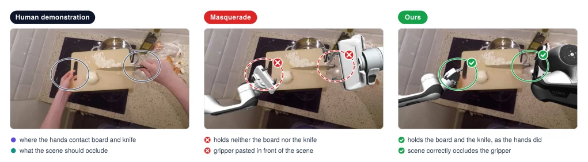
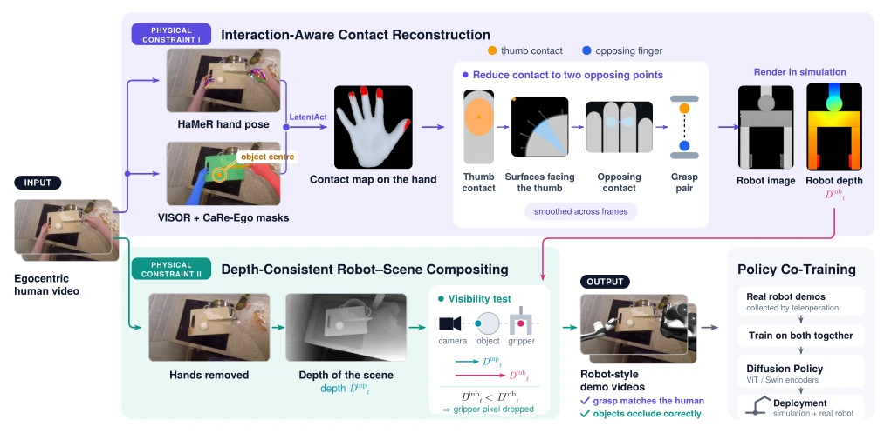
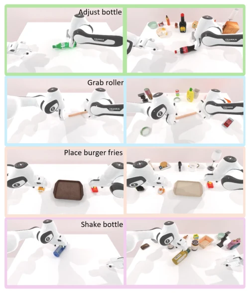
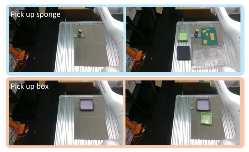

This paper attempts to patch the longstanding task of "human-to-robot video translation". While works like Masquerade [1] replace human hands with robotic arms, they often violate "physical laws", such as hands passing through objects or unstable grasp points, resulting in distorted supervision signals. The authors introduce a "physical consistency" patch here, emphasizing contact geometry and occlusion relationships, aiming to ensure edited videos not only resemble but also adhere to physical laws. Although promising, the limitations of monocular depth estimation were fully exposed in real-world experiments; after all, monocular depth estimation is akin to asking a blind person to guess distance, which is somewhat unreasonable, limiting performance on depth-sensitive tasks. However, OOD performance was indeed boosted in simulation environments, indicating that data quality is more important than quantity, at least superior to simply accumulating data. This serves as a valuable reminder for embodied AI data engineering, yet also exposes the fundamental flaw of monocular vision in depth perception.
The biggest bottleneck in robot learning is data. Collecting real-world robot data is prohibitively expensive, and while human videos are abundant, they suffer from an "embodiment gap". Direct training on human videos is infeasible due to structural differences between human hands and robotic arms. Previous methods such as Masquerade [1] and Phantom [14] attempt to bridge this gap via video editing, yet often focus solely on visual similarity, neglecting the coherence of physical interaction. For instance, an edited robotic arm may appear to grasp an object, yet the contact points are incorrect or occlusion relationships are erroneous. Such inconsistent supervision misguides policy learning, resulting in poor generalization. Therefore, a method is required that preserves the physical interaction structure within original human demonstrations, ensuring the converted videos are not merely "like" robots but are "physically consistent" robots. This ensures reliable policy supervision and prevents robots from learning incorrect physical common sense.

Fig. 1. We propose an interaction-aware, depth-consistent human-to-robot video-editing pipeline that preserves both grasp geometry and robot–object visibility. Existing editing methods such as Masquerade [1] can produce grippers that miss the demonstrated contacts and violate scene occlusions, whereas our method better preserves the physical interaction in the original human demonstration.
The core of this method lies in addressing the problem of "appearing similar but lacking substance". In the contact reconstruction phase, the system first enhances VISOR [16] annotations through CaRe-Ego [17] to acquire dense hand and object masks. Subsequently, utilizing LatentAct [18] combined with object center points as spatial cues, dense contact regions on the MANO mesh are predicted. To accommodate parallel grippers, the system clusters these regions into two contact points representing the thumb and opposing fingers, introduces surface normal constraints to filter geometrically valid grasping planes, and finally eliminates inter-frame jitter via temporal smoothing. In the synthesis phase, rather than directly overlaying the robot, the system compares the inpainted scene depth with the rendered robot depth. If the scene depth is less than the robot depth, the object is deemed to occlude the robotic arm, thereby generating physically correct occlusion relationships. The ultimately generated robotized videos are jointly trained with real robot data for the policy, ensuring consistency between visual supervision and physical interaction.

Fig. 2. Overview of our framework. (a) Interaction-aware contact reconstruction combines hand–object segmentation and mesh-level contact prediction to recover temporally stable opposing contacts for robot grasp retargeting. (b) Depth-consistent compositing compares scene and rendered-robot depth to enforce physically correct robot–object occlusions. The resulting robotized videos are co-trained with real robot demonstrations for policy learning.
Experiments were conducted separately on the RoboTwin simulation platform and real Franka robots. Simulation tasks encompass four scenarios, including bottle adjustment and wheel grasping, with the evaluation metric being success rate. Compared to the Baseline (using only robot data) and the method using original Masquerade [1] edited videos, this method achieved the highest average success rate in both in-distribution (ID) and out-of-distribution (OOD) scenarios. Particularly in OOD scenarios, the success rate with the DP-Swin encoder improved by approximately 15 percentage points, indicating that physically consistent data enhanced the policy's robustness against visual distractors. In real-world experiments, the sponge grasping task performed well, but the box grasping task involving depth alignment was constrained by the ambiguity of monocular depth estimation, showing limited improvement. Ablation studies confirm that removing either the contact reconstruction or depth occlusion modules results in a significant decline in OOD performance, validating the effectiveness of each module.

Fig. 3. RoboTwin simulation evaluation scenes for Adjust Bottle, Grab Roller, Place Burger Fries, and Shake Bottle (top to bottom). The left column shows the ID scenes containing only task-relevant objects, while the right column shows the OOD scenes with additional visual distractors.

Fig. 4. Real-world evaluation scenes for Pick Up Sponge (top) and Pick Up Box (bottom). The left column shows the ID scenes containing only task-relevant objects, while the right column shows the OOD scenes with additional visual distractors.